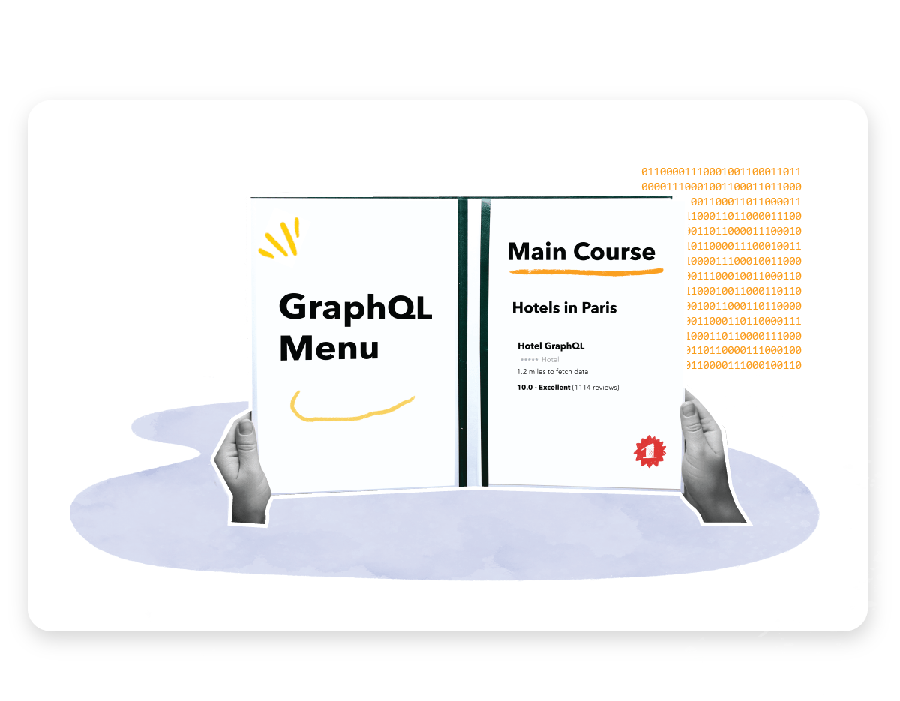

Boosting design team efficiency: trivago's Sketch to Figma Journey
User Experience
Greetings! It’s remarkable how technology continually evolves and impacts the tools we use for creating and developing products. Figma ha...
Sami Hammami
· 10 min read
Latest articles
See all ›
Building Our First GraphQL Server with Go: An Implementation Guide
Backend
trivago provides travelers with an extensive collection of hotels, empowering them to compare prices and uncover the best vacation deals. Wi...
Kutlu Eren
· 5 min read
Implementing Data Validation with Great Expectations in Hybrid Environments
DevOpsData validation is an essential step in any data processing pipeline, as it ensures the integrity and accuracy of the data to be used across all subsequent processing steps. Great Expectations (GX) is an...
Kamila Widyanto
· 7 min read
Tech IT Up - Growth and Learning for trivago Techies
Engineering CultureA tech conference is a gathering of tech enthusiasts, geeks, and wizards who come together to share their magic spells (aka tech...
Our path to FAME
Engineering CultureWhat triggered you to choose the career you are in and still inspires you in your path today? Role models are often sources of aspirations and inspirations in our careers. Unfort...
Laureen Roesch-Ahrens
· 9 min read
Technical Decision-Making
Engineering Culture EngineeringAs a part of the series of posts already mentioned on WARP - A Web Application Rewrite Project, we are disclosing our process of making technical decisions. We hope that you find th...
How we improved reporting and monitoring of test automation results
Frontend Monitoring Quality AssuranceOver the last few years, we completely refactored what was described in our previous article about how we use the ELK stack for an overview of our test automation results, but some core con...
Giuseppe Donati
· 6 min read
How continuous product discovery works for us
Product ManagementHello, I am a product manager here at trivago. I have worked on different parts of the product such as apps, alternative accommodations, landing pages, and search & flo...
Sören Weber
· 8 min read
What Have I Even Been Doing Today?
Engineering Culture LeadershipYou have always been an engineer, solving problems and writing code. Now, there is an opportunity to become an engineering manager.
Tom Bartel
· 11 min read
Marketing Attribution: Evaluating The Path to Purchase in the Product Ecosystem
Data ScienceWhile working with data and analyzing the interactions of our users with the products we have today, it is essential to understand their behaviors by tracking their past actions, such...
Shelly Leal
· 9 min read
Explore-exploit dilemma in Ranking model
Data Science Machine LearningImagine, out of thousands of accommodations that match a user search, you have to select the “best” 25 to show to the user. Which ones would you show- the ones you know perform wel...
Aida Orujova
· 8 min read
.png)